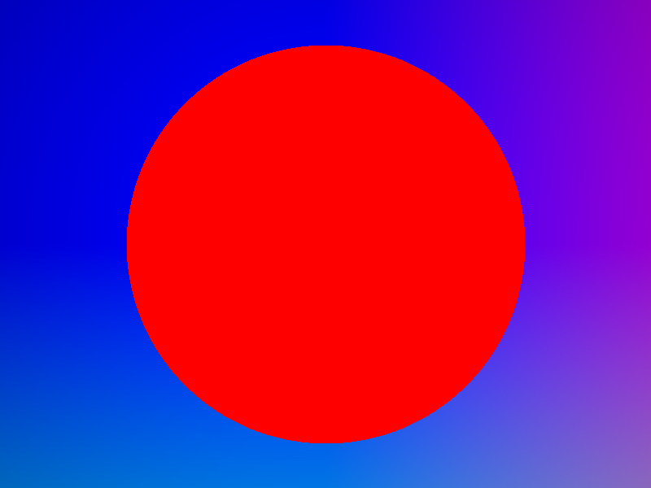
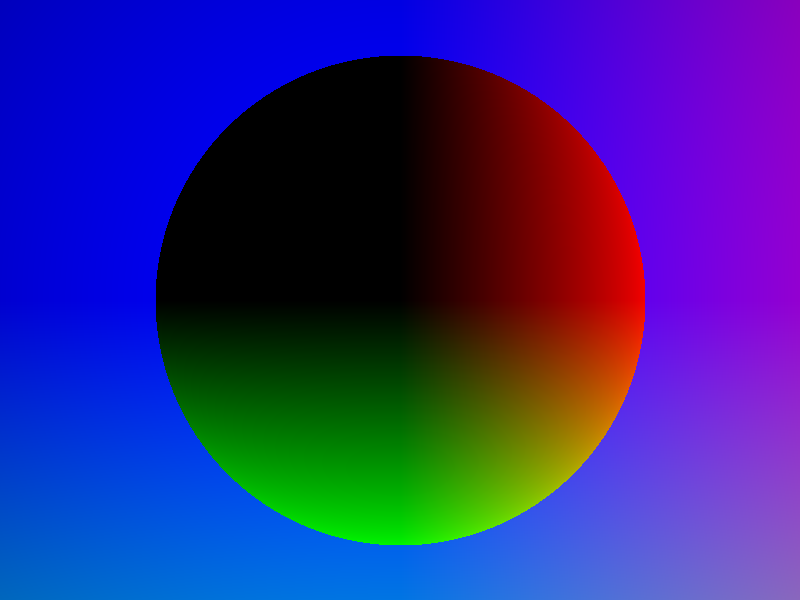
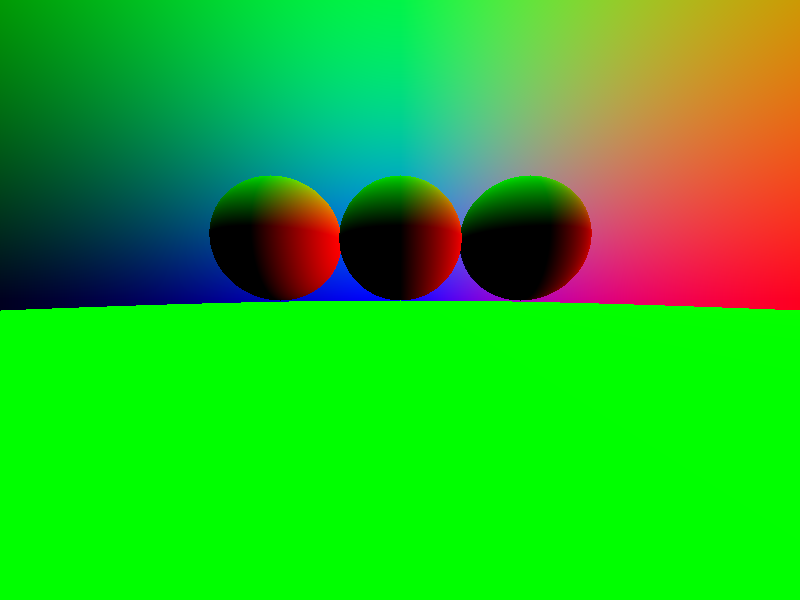
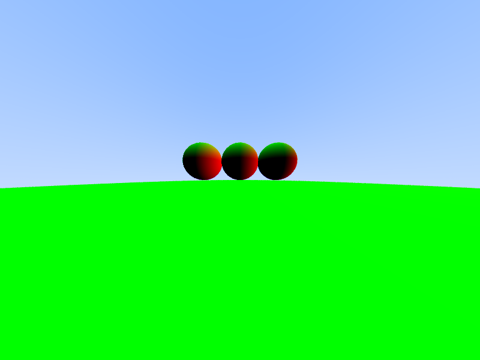
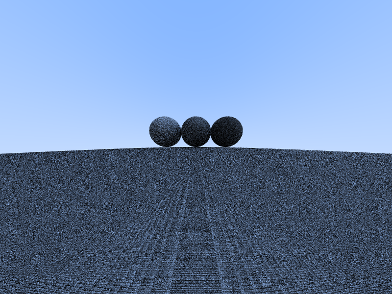
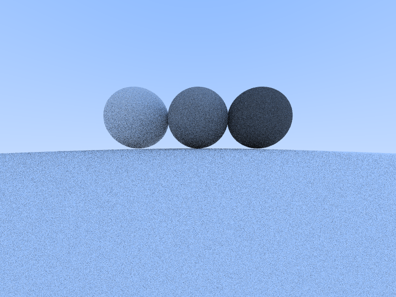
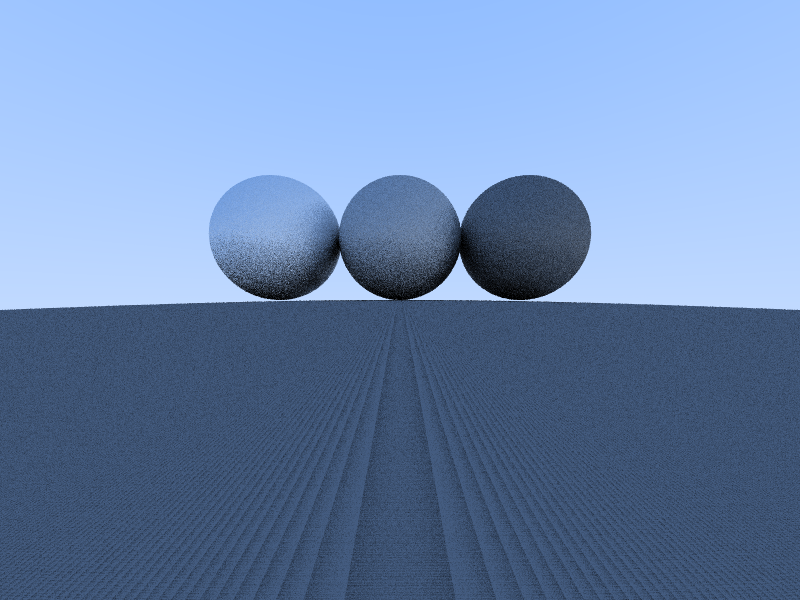

<h2>Raytracing Progress</h2>

<h3>Basics</h3>

<hr>
<h3>Rectangular Viewport</h3>

<hr>
<h3>Normal coloring</h3>

<hr>
<h3>Add ground</h3>

<hr>
<h3>Add spheres</h3>

<hr>
<h3>Add antialiasing</h3>

<hr>
<h3>Add sky color</h3>

<h3>Add diffusion</h3>

<h3>Reduce diffusion constants</h3>

<h3>Make diffusion more directional (Lambertian diffusion)</h3>


